What an epithermal deposit is
deposits form in volcanic arc and back-arc terranes, mostly hosted by rhyolite, rhyodacite and dacite. Mineralisation can be syngenetic or epigenetic, and gold-only, gold-silver or silver-only. It forms anywhere from the surface (geysers, hot springs, mud pools) down to about 3 km, from hydrothermal fluid that ultimately comes from a magma below. Ages run from the Archean (at least 3 billion years) to today, in active volcanic regions such as White Island in New Zealand. slides 3 and 4
They’re generally small, under 50 Mt, but high grade, and ore (over 1 kg of gold or silver per tonne) is relatively common. Deposits cluster around volcanic calderas, often along the caldera margins. Gold comes as free-milling native gold and as micro-particles locked in sulphides. Common companions: sphalerite (a honey-yellow colour is a good sign of gold and silver), galena, tetrahedrite-group minerals and chalcopyrite, early euhedral pyrite, quartz veins and carbonates (ankerite goes with the ore), and alteration of illite-muscovite and adularia. slides 3 and 4
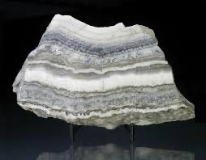
Describe the banding. What does it tell you about how this vein filled?
Show what I see
- Many thin, roughly parallel bands of white quartz, grey and translucent blue-grey chalcedony, repeated across the slab.
- No wall-rock fragments, no single coarse fill.
So the vein filled bit by bit, band after band, each layer growing on the last in open space: (colloform) banding. Each band records a pulse of fluid, and fine chalcedony means rapid, low-temperature deposition. This is the signature texture of low sulphidation epithermal veins, and gold often sits in particular bands. slides 1, 27 to 29
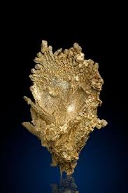
- Arc and back-arc volcanic hosts (rhyolite to dacite); surface to ~3 km; Archean to active today.
- Small (<50 Mt) but high grade; bonanza (>1 kg/t) ores common; clustered around calderas.
- Deposited mainly by boiling and by mixing with meteoric water; permeability focuses the fluid.
Hot springs and geysers
Epithermal Au, Au-Ag and Ag deposits are widespread around the Pacific Rim, in the arcs and back arcs above its subduction zones. Their modern surface expression is geothermal: geysers like El Tatio in Chile and Old Faithful at Yellowstone, and hot pools. slides 5 and 6
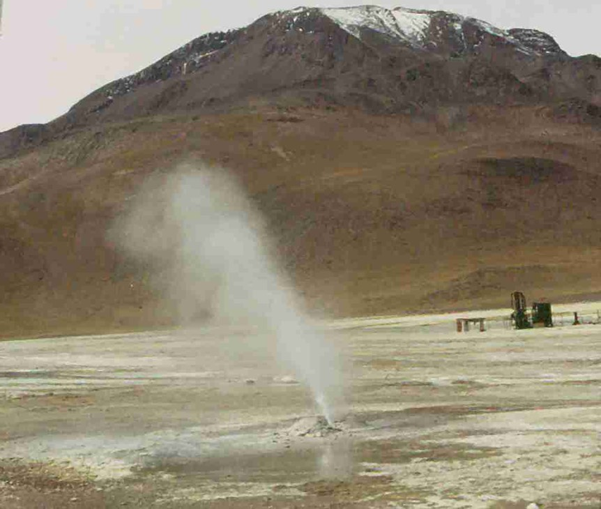
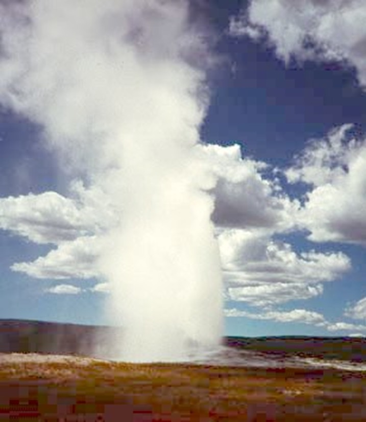
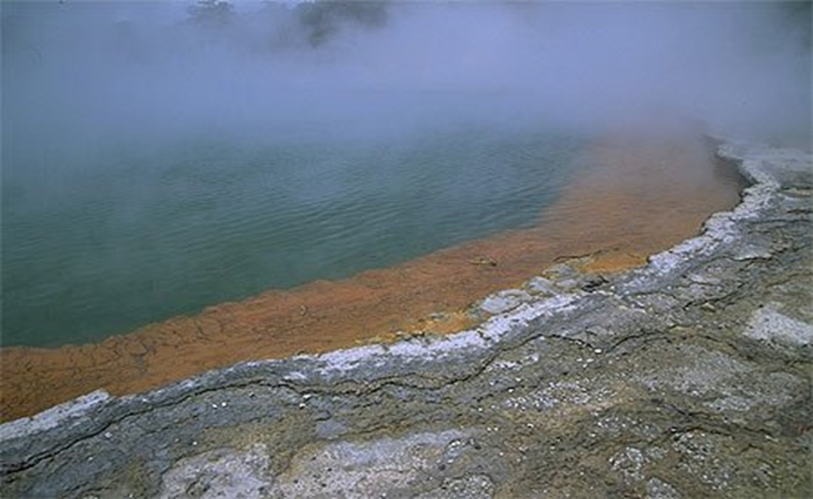
The orange rim of this pool at Waiotapu assays about 80 ppm gold. Why isn’t anyone mining it?
Show what I see
- A steaming pool with a bright orange rim: precipitated sulphides of arsenic, antimony and mercury, carrying gold and silver.
So 80 ppm (80 g/t) is a high grade, but there’s no volume to exploit: a thin crust on one pool. It’s a live epithermal system depositing gold right now, the surface end of what, buried and preserved, could become an ore deposit. slide 7
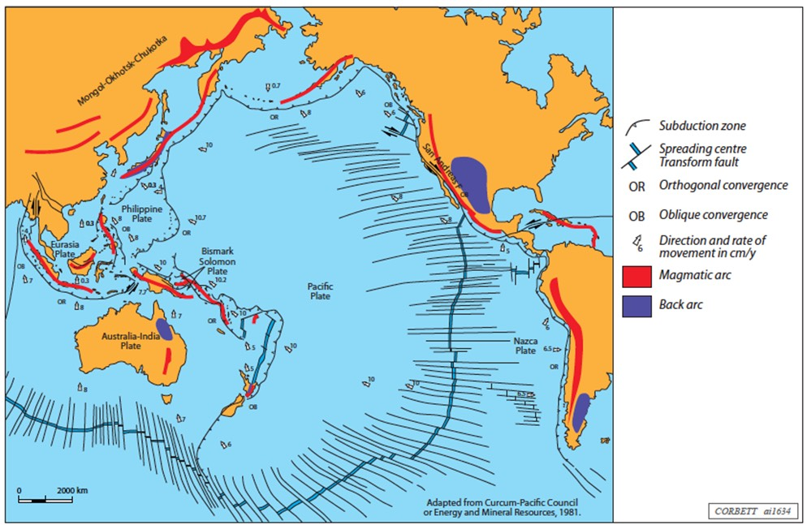
What focuses the ore
Ore needs focus, and permeability is the key. At Round Mountain in Nevada, for example, impermeable tuff beds lie above permeable tuff beds, so fluid spreads through the permeable layer under the cap. The controls fall into two groups. Chemical: replacement of reactive rock (lithological control) and fluid mixing. Physical: breccias and structures. slides 4 and 8
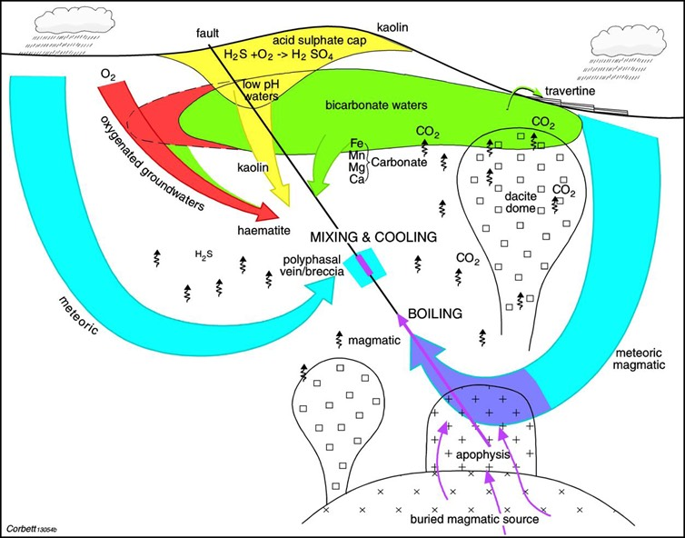
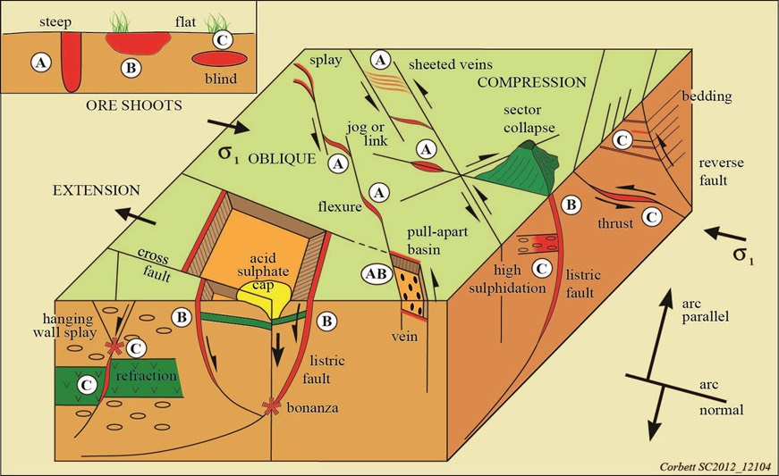
Structurally, ore shoots form where a fault opens up: dilational jogs, flexures and bends, splays, pull-apart basins and the intersections of structures. In the chemical model, deep magmatic fluid rises and boils, and near the top meets oxygenated groundwater, bicarbonate (CO₂-rich) water and acid sulphate water. Each mixing front is a place to drop metal. slide 8 (Corbett)
Chemical or physical control?0 / 4
Breccias
Epithermal gold and silver are commonly tied to , because breaking rock creates permeability and, often, a sudden pressure drop. Four kinds: magmatic, hydrothermal, milled matrix and volcanic breccias. slide 9
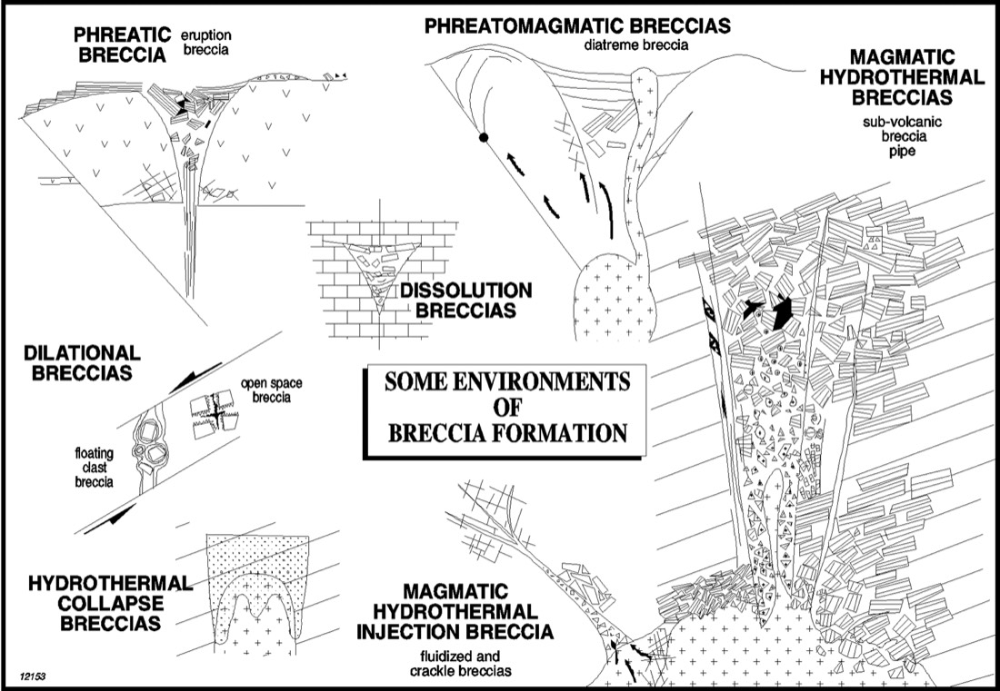
| Magmatic | Phreatomagmatic | Phreatic | |
|---|---|---|---|
| Common name | Sub-volcanic breccia pipes, magmatic hydrothermal breccias | Diatreme breccias, milled matrix fluidised breccias | Eruption breccias |
| Origin | Violent exsolution of volatiles from an intrusion | Magma meets groundwater: venting and rapid heating | Depressurisation of a geothermal system |
| Level | Deep, at porphyry level; need not vent | Intermediate to deep; vent at surface | Surface: sinter and outflows |
| Examples | Kidston | Wau, Kelian, Acupan, Lepanto | Champagne Pool, Puhipuhi, Toka Tindung, McLaughlin |
slides 11 to 13
Name the breccia0 / 4
High, intermediate and low sulphidation
Epithermal systems split by the state of sulphur in the fluid. fluid is saline and acid, with sulphur as SO₂: magmatic vapour that comes up close to the volcano and its porphyry. fluid is dilute and near neutral, with sulphur as H₂S: magmatic fluid that has been diluted, cooled and neutralised by deep-circulating meteoric water, usually further from the intrusion. Intermediate sulphidation sits between, with more base metals. The labels come from the sulphur’s oxidation state, which shows in the sulphide minerals (enargite in HS, sphalerite with low Fe and pyrite in LS). slides 14 to 18
| High sulphidation | Low sulphidation | |
|---|---|---|
| Fluid | Saline, S as SO₂ | Dilute, S as H₂S |
| Wall rock alteration | Zoned advanced argillic to argillic: vughy silica > alunite group > kaolinite group > illite group; abundant pyrite | Local early propylitic, then zoned argillic (illite group) with quartz, carbonate, pyrite |
| Ore minerals | Enargite-pyrite, low-T luzonite; covellite, chalcocite, bornite, chalcopyrite at depth | Low sulphide (<2%, locally <5%): pyrite, sphalerite (variable Fe:Zn), galena, chalcopyrite, Ag sulphosalts |
| Metals | Au > Ag + Cu | Au > Ag; less common Cu, Zn, Bi, Te |
| Gold metallurgy | Good in oxide ore; enargite hosts refractory Au; good Cu ores at depth uncommon | Generally good; poor where Au is encapsulated in fine arsenopyrite |
| Ag:Au | SW Pacific Ag-poor; Latin America Ag-bearing, locally Ag ≫ Au | Variable, both high- and low-fineness gold |
| Controls | Permeability from host rock structure, domes and breccias | Ore shoots controlled by lithology, structure and the mechanism of gold deposition |
slide 18
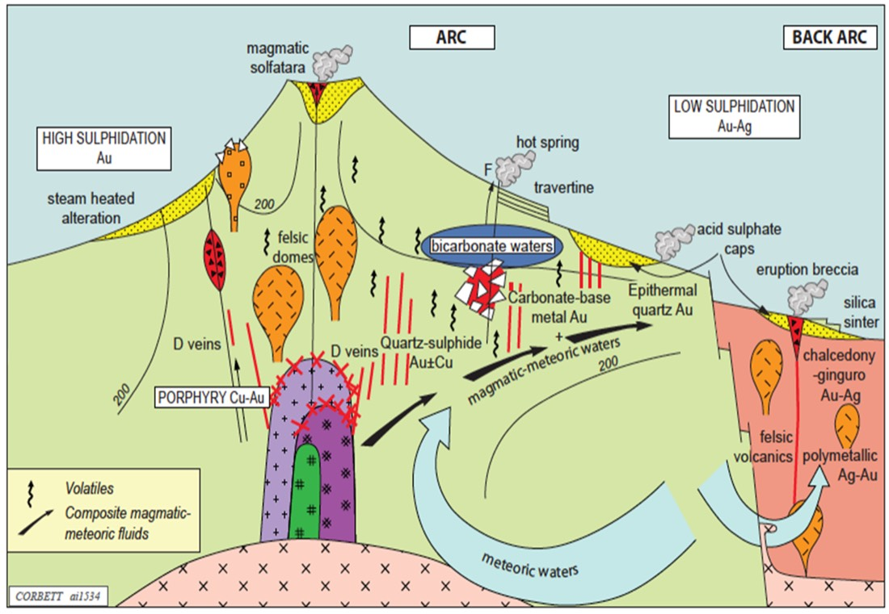
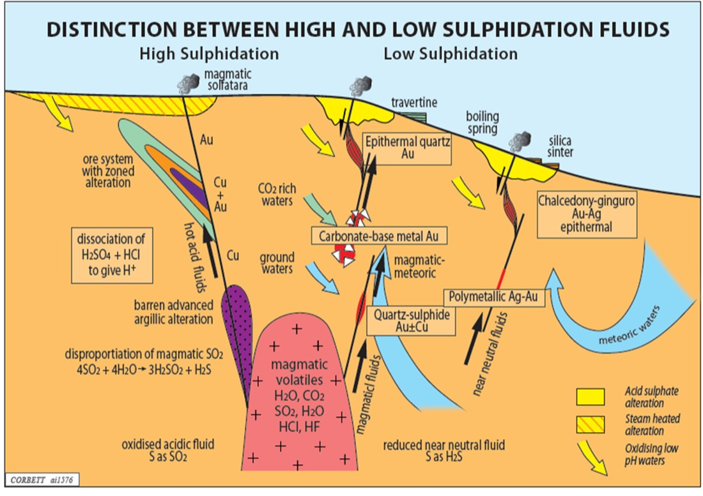
High or low sulphidation?0 / 6
High sulphidation in the hand
Acid magmatic vapour condenses into groundwater and makes it so acidic that it strips almost everything but silica out of the rock. What’s left is , a porous silica skeleton, surrounded by zones of alunite, then kaolinite and dickite, then illite and finally propylitic alteration as the acid is neutralised outward. Gold and enargite come later, in a second, liquid-rich stage, into the porous vughy silica and breccias. slides 19 to 24
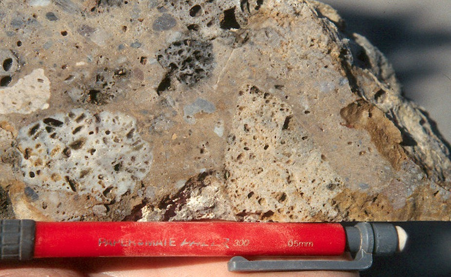
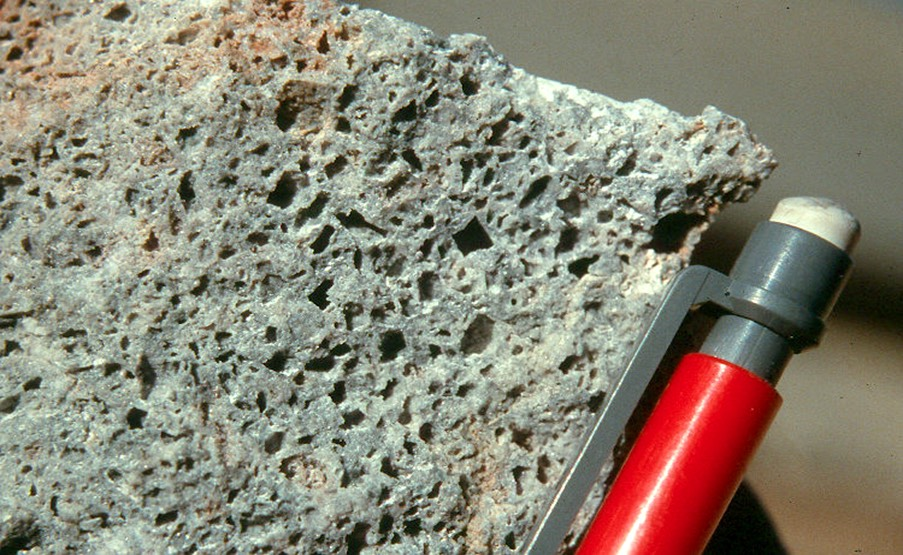
The holes in B have the shape of crystals. What was in them, what took it away, and what’s left?
Show what I see
- Pale, light, porous rock; the holes in B are blocky and rectangular, the shape of feldspar phenocrysts in a porphyry.
- A: holes through a fine-grained breccia matrix and fragments.
So this is vughy silica. Extremely acid fluid (pH below 2) dissolved the feldspar phenocrysts and everything else except silica, leaving a residual silica skeleton with crystal-shaped holes. It’s the core of high sulphidation alteration, and its porosity makes it a great trap for later gold-enargite fluid. A is a diatreme breccia at Veladero, B a vughy silica-altered porphyry in the El Indio district. slide 22
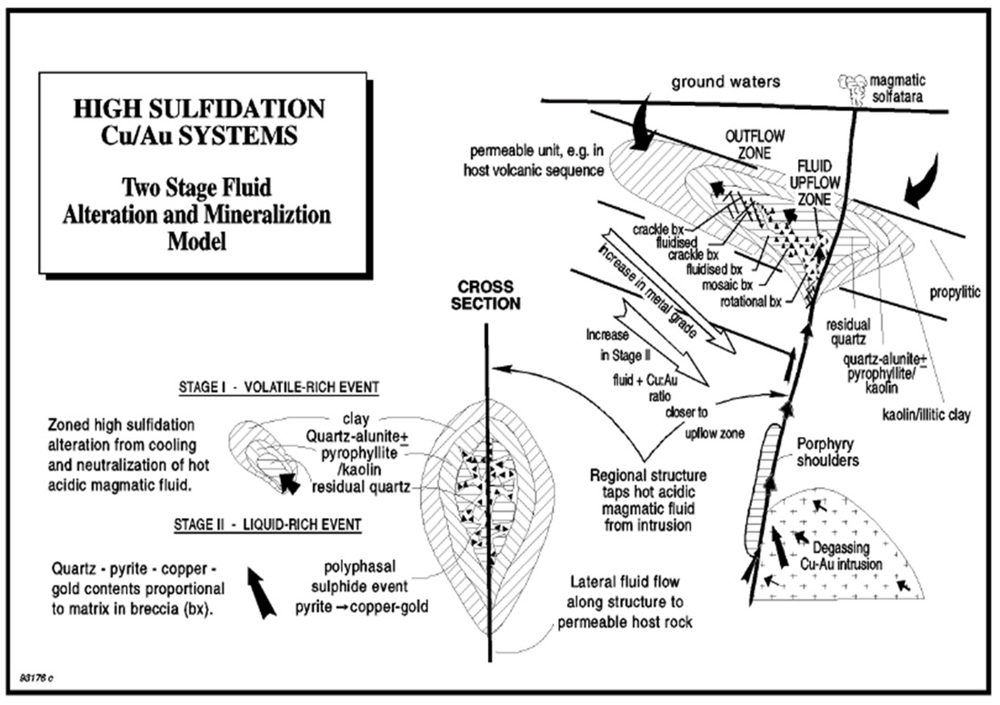
Low sulphidation and bonanza veins
Low sulphidation systems make the classic epithermal veins: banded quartz, chalcedony and adularia with little sulphide, sometimes stunningly rich. Above them, at the old surface, siliceous forms around hot springs, as at McLaughlin in California. slides 25 to 29
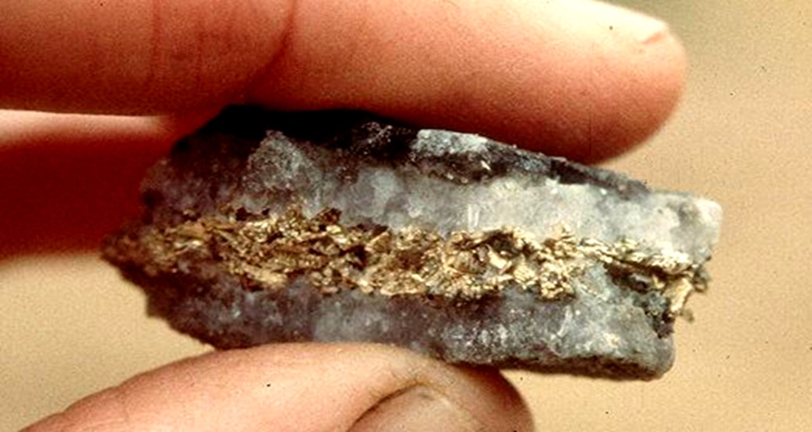
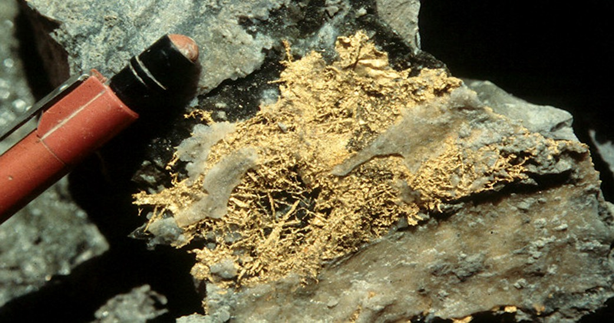
Where exactly is the gold in A, and what texture does the gold have in B?
Show what I see
- A: gold fills the centre line of an open quartz vein, the last space to close.
- B: fine, branching wire gold with quartz and a green vanadium mica, roscoelite.
So both are bonanza ore. In A the gold was the last thing deposited, in the open centre of the vein; in B it grew as free wires into open space. Open space plus a sudden change in the fluid (boiling or mixing) gives these spectacular grades. slide 26
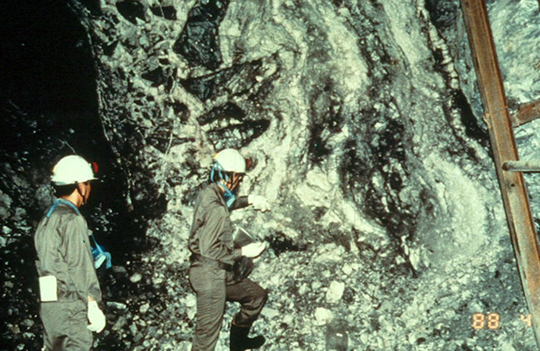
Look at the vein margins. Besides the banding, what else is in the vein?
Show what I see
- Thick, banded, white and grey quartz-adularia, contorted in places.
- Angular dark fragments of wall rock suspended in the vein near its margins.
So this is a banded adularia-sericite fissure vein with floating clast breccias: wall-rock fragments that broke off and were caught up as the vein grew, a sign of repeated fracturing and fluid surges. Hishikari, Japan, is one of the world’s richest gold mines and the classic low sulphidation example. slides 28 and 29
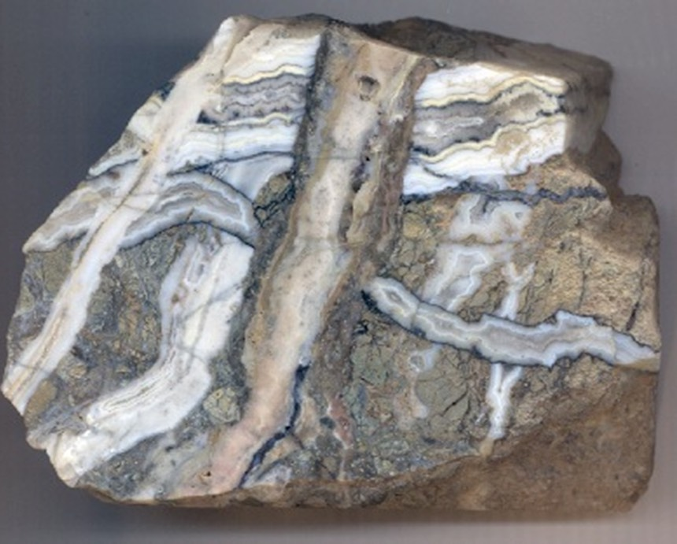
- The lab’s epithermal suites include Woodlark Island (PNG) and Vatukoula (Fiji). Expect banded quartz-chalcedony-adularia veins, low sulphide, with pyrite, sphalerite, galena and possibly visible gold or Ag sulphosalts.
- Honey-yellow, low-iron sphalerite is a good sign of gold and silver.
- Vatukoula is an alkalic epithermal system rich in gold tellurides (Lecture 12).
What makes high grade
Boiling is the classic epithermal mechanism, but Corbett argues it deposits mostly gangue: adularia, quartz pseudomorphing platy calcite, and local chalcedony. The grade comes from other things, and each leaves a clue. slide 32 (Corbett, 2007)
| Mechanism | Clue in the rock | Grade |
|---|---|---|
| Slow cooling | Coarse sulphides | Low Au |
| Rapid cooling or quenching | Fine sulphides; low-T quartz (opal) against high-T sulphides | High precious metals in polymetallic veins |
| Boiling | Adularia, quartz after platy (bladed) calcite, chalcedony | Mostly gangue |
| Mixing with oxygenated groundwater | Hypogene hematite in the ore | Elevated Au |
| Mixing with bicarbonate (CO₂) water | Carbonate with base metals | Higher Au: the carbonate-base metal group |
| Mixing with low-pH acid sulphate water | Hypogene kaolin and halloysite in the ore | The highest Au grades |
slide 32
Read the clue, call the grade
Pick what you see in the ore.
The ranking follows slide 32; the gauge positions are schematic, not grades.
Reading the alteration
Alteration minerals record temperature and pH, so you can map where you are in a system. In high sulphidation systems the acid alteration zones outward from vughy silica through alunite and kaolinite to illite and chlorite. In low sulphidation systems you see quartz, adularia, illite and carbonate, with propylitic chlorite-epidote further out. Above the water table, H₂S boiled off from either kind condenses and oxidises to sulphuric acid, building a acid sulphate blanket of kaolin, powdery alunite, cristobalite and opal. It looks like high sulphidation alteration but is barren, so don’t be fooled. slides 19, 24 and 31
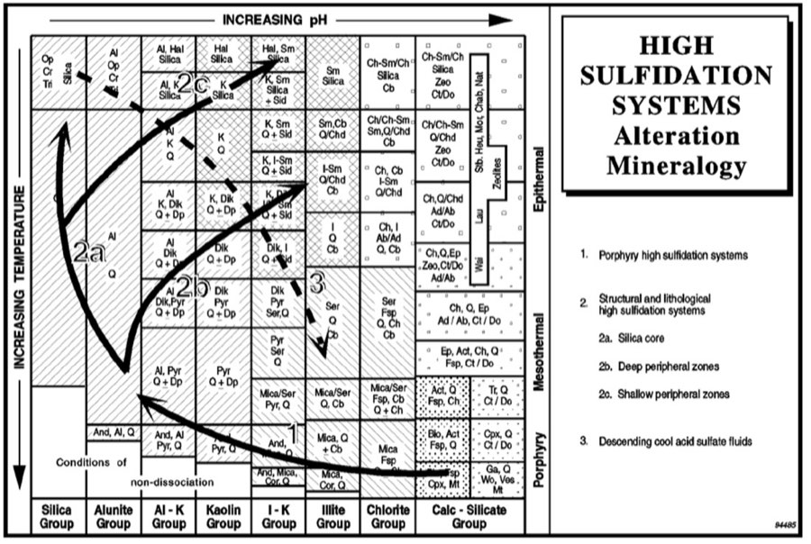
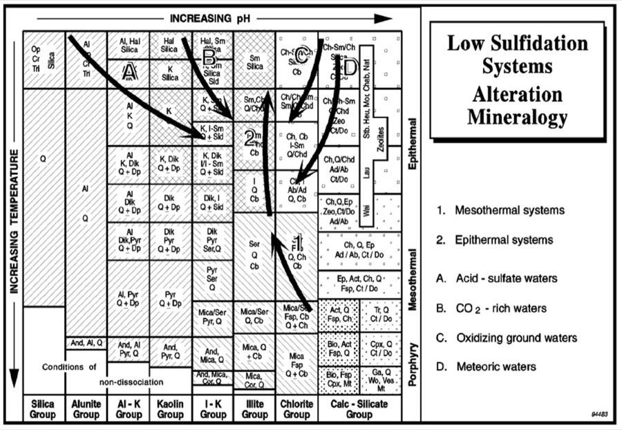
Where does this alteration put you?0 / 5
Lihir: a volcano that lost its head
Lihir Island, in PNG’s New Ireland Province, is about 20 × 13 km, built of Pliocene-Pleistocene volcanoes. The Lihir gold mine sits inside the Luise caldera (5.5 × 3.5 km). Gold was found in 1969, modern exploration began in 1985 and mining in 1997. Reserves are 649 Mt at 2.25 g/t Au. The hosts are andesitic to latitic lavas, tuffs and breccias intruded by quartz-poor monzonite and monzodiorite porphyries, and mineralisation extends below sea level. The geothermal system is still active, at 120 °C at the surface. Newcrest owned it until Newmont took over. slides 33 to 35 slide notes
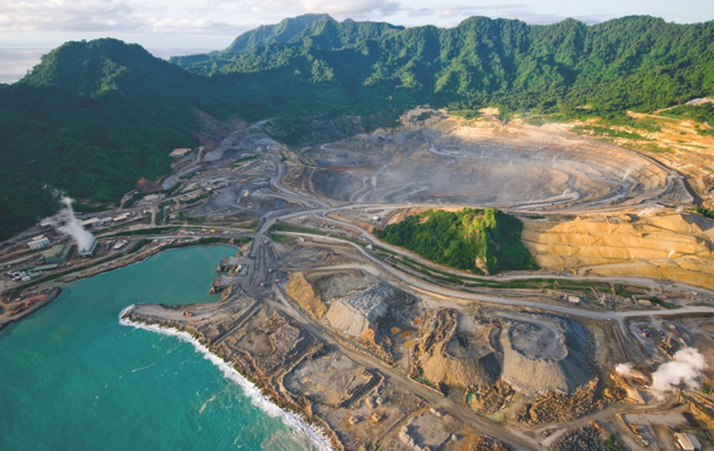
Collapse the volcanostep 1 of 4
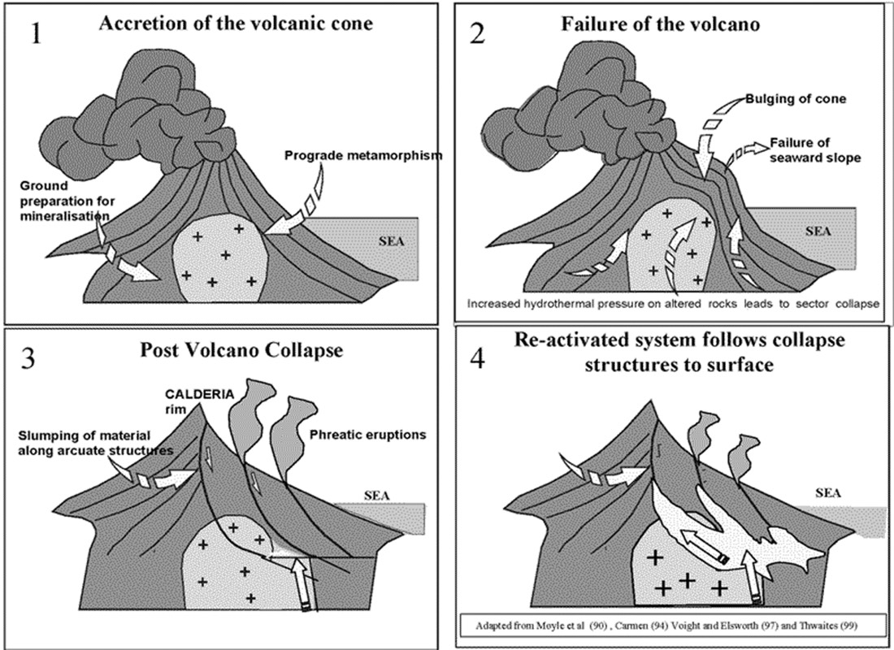
The timing is the story. Potassic, porphyry-style alteration formed between 0.917 and 0.342 Ma. At 0.34 Ma the Luise volcano collapsed sideways to the east, removing at least 1 km of rock. That sudden unloading dropped the confining pressure, releasing fluid and setting it boiling, and epithermal gold has been deposited from 0.336 Ma to the present, overprinting the porphyry. slide 37 (Müller et al., 2002)
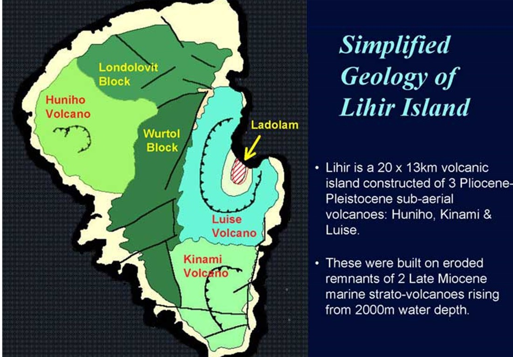
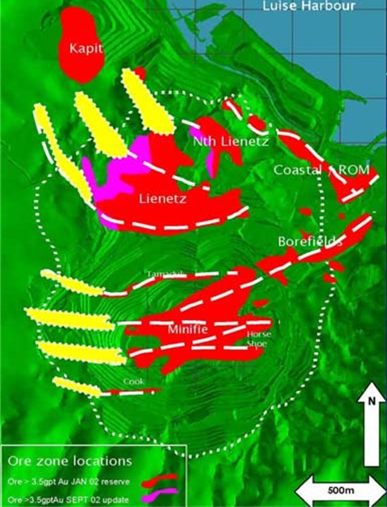
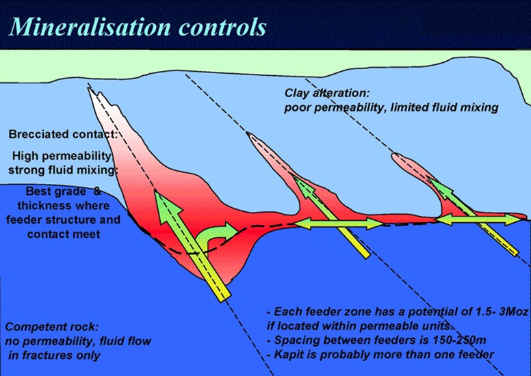
Epithermal deposits close to home
UNSW honours and PhD projects have studied several epithermal systems: Woodlark Island in PNG, the Drake goldfield in north-eastern NSW, the Jambi and Tambang deposits in southern Sumatra, and the Bowdens silver deposit near Mudgee in NSW. Eastern Australia has Palaeozoic epithermal deposits too, not only young Pacific ones. slide 2
The closing message from this lecture is a warning worth remembering: epithermal deposits are highly complex, with multiple mineralisation and alteration episodes, and often you may not understand them until mining has finished. slide 39
Exploration decisions0 / 3
- HS: saline, acid, SO₂; vughy silica, alunite, kaolinite; enargite-luzonite; Au > Ag + Cu.
- LS: dilute, near-neutral, H₂S; adularia-sericite, illite, banded quartz; <2% sulphide; Au > Ag.
- Grade: mixing with low-pH waters gives the highest Au (hypogene kaolin); boiling makes mostly gangue.
- Lihir: collapse at 0.34 Ma unloaded ~1 km, causing boiling and gold.
Self-test
Answer out loud or on paper before you open each one. Claim the ounces if you got it.
Glossary and flashcards
Terms this lecture assumes or defines quickly. The dotted words in the text open them in place.
Flashcards
Where this goes next
That closes gold week. Put Lectures 11 to 14 side by side and you have the whole magmatic-hydrothermal column: porphyry at depth, high sulphidation lithocaps above it, low sulphidation veins and hot springs further out, and orogenic gold in the deeper, metamorphic crust.